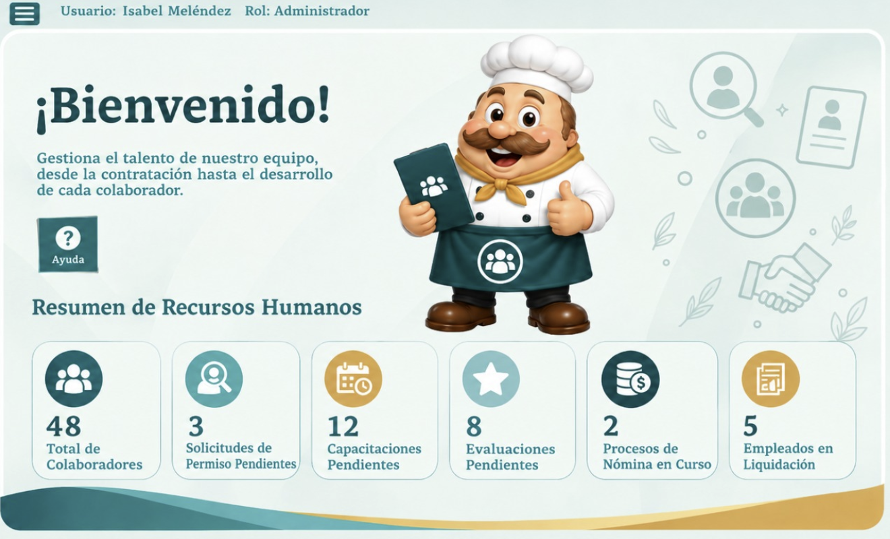
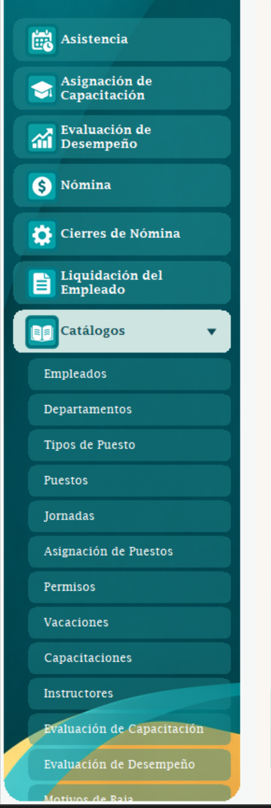

La ventana 9000 - Recursos Humanos es el menú principal del módulo de Recursos Humanos del sistema,
desarrollado para Embutidos de Calidad S.A. Se abre después de iniciar sesión y desde aquí se
entra a todas las ventanas del módulo.
En la parte de arriba se muestra el usuario que inició sesión y su rol. A la izquierda está el menú
con los procesos y los catálogos, y a la derecha la bienvenida, el botón de Ayuda y el Resumen de
Recursos Humanos con los indicadores del día.

Cada botón del menú abre su ventana:
1. Asistencia: control diario de entradas y salidas. Desde ahí se abre Horas Extra.
2. Asignación de Capacitación: asigna las capacitaciones a los empleados.
3. Evaluación de Desempeño: abre el Plan de Mejora y Ver Evaluaciones.
4. Nómina: conceptos de pago, cálculo de la nómina y su detalle.
5. Cierres de Nómina: cierra el mes y envía la póliza a Contabilidad.
6. Liquidación del Empleado: calcula el finiquito y abre la Baja de empleados.
El botón ☰ de la parte de arriba oculta el menú y deja solo los íconos; al presionarlo de nuevo
el menú vuelve a mostrarse completo.
El botón Catálogos despliega la lista de mantenimientos del módulo: Empleados, Departamentos,
Tipos de Puesto, Puestos, Jornadas, Asignación de Puestos, Permisos, Vacaciones, Capacitaciones,
Instructores, Evaluación de Capacitación, Evaluación de Desempeño, Baja de Empleados, Motivos de Baja y
Parámetros de Ley.
Al presionar Catálogos otra vez la lista se cierra. Si la lista no cabe en la pantalla, el menú se
puede desplazar hacia abajo con la rueda del mouse.

Las tarjetas del resumen muestran cómo está el módulo en este momento:
1. Total de Colaboradores: empleados activos que no tienen una baja registrada a la fecha.
2. Solicitudes de Permiso Pendientes: permisos que todavía no se aprueban ni se rechazan.
3. Capacitaciones Pendientes: capacitaciones activas que todavía no terminan.
4. Evaluaciones Pendientes: colaboradores que todavía no tienen evaluación de desempeño en el trimestre actual.
5. Procesos de Nómina en Curso: meses con nóminas aprobadas o pagadas que todavía no tienen cierre.
6. Empleados en Liquidación: empleados con una liquidación en borrador o aprobada que aún no se paga.
Los números se actualizan solos cada vez que se cierra una ventana del módulo y se regresa al menú.
Si no se pueden leer los datos, las tarjetas muestran un guion (-) y el sistema avisa una sola vez.
Las opciones del menú que puede usar dependen del rol asignado a su usuario. Si una opción no está permitida para su perfil, el botón aparece en gris y no se puede presionar. Si necesita acceso, solicítelo al administrador del sistema.
El botón de Ayuda de la bienvenida abre esta página. Cada ventana del módulo tiene su propio botón de Ayuda que abre la página de esa ventana; en el árbol de la izquierda puede ir a cualquier tema.
Para salir del módulo presione Cerrar Sesión al final del menú. El sistema pregunta si desea cerrar la sesión; al confirmar, regresa a la ventana de inicio de sesión.